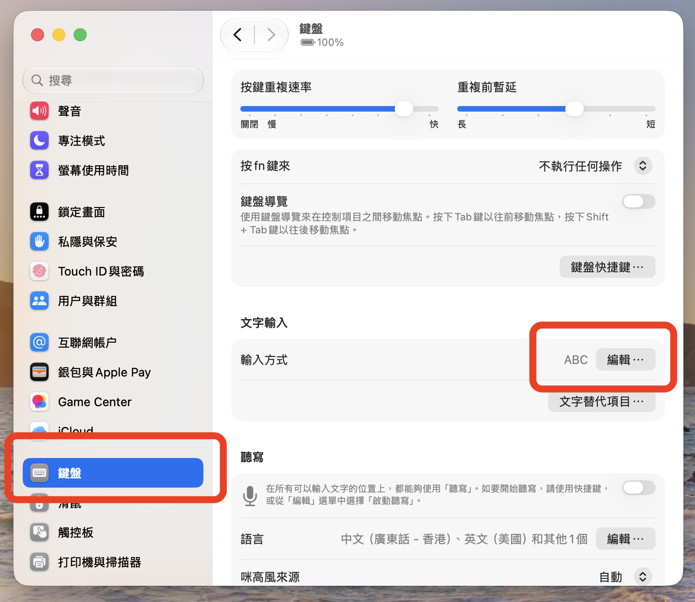
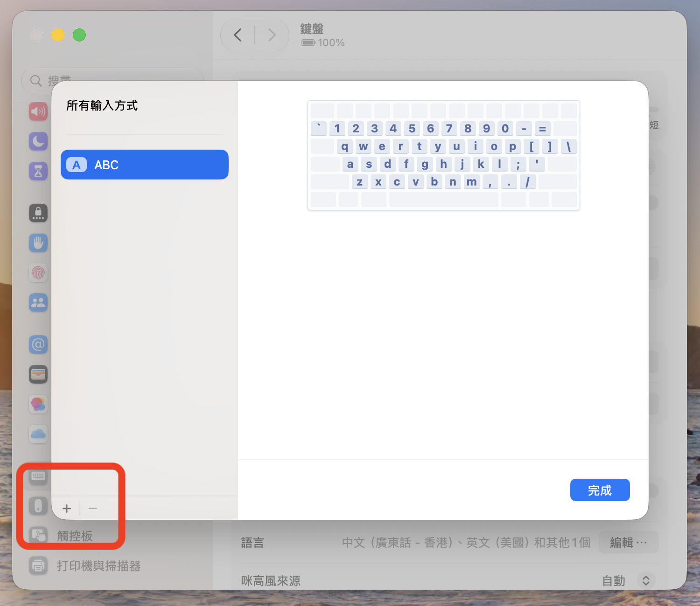
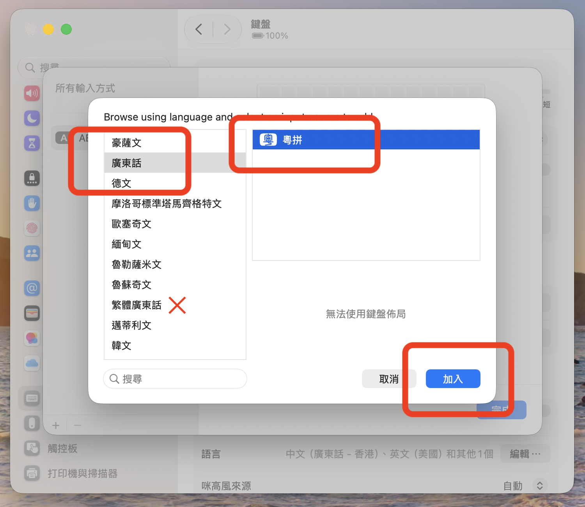
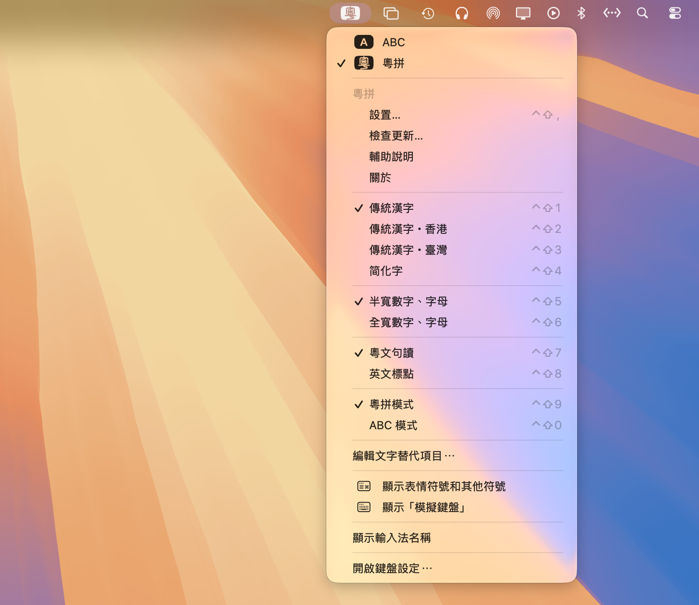

brew install --cask jyutping
安裝之後，記得要登出一下電腦再登入，或者重啟一下電腦，以使輸入法正常生效。
請注意：登出電腦會將所有程式結束運行。
安裝並且登出、登入電腦之後，如果沒有看到可用的粵拼輸入法，可以嘗試手動添加：




brew upgrade --cask jyutping
更新之後，最好和樣登出一下電腦再登入，或者重啟一下電腦，以使輸入法正常生效。
請注意：登出電腦會將所有程式結束運行。
如果想要卸載輸入法，可以用以下兩個命令之一。
1. 卸載輸入法並刪除相關資料：
brew uninstall --zap --cask jyutping2. 只卸載輸入法，保留相關資料：
brew uninstall --cask jyutping
卸載完之後，記得和樣要登出一下電腦再登入，或者重啟一下電腦。
請注意：登出電腦會將所有程式結束運行。